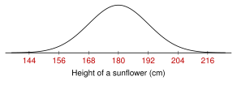

One study, every tool. A class flew paper airplanes. Here are 5 flights, in feet.
14, 18, 22, 22, 24
| 2.1 Find the SD. The SD is about how far the values usually are from the mean. |
feet
| 14 | 18 | 22 | 22 | 24 |
| | | 2 | 2 | 4 |
| 36 | 4 | 4 | 4 | 16 |
feet
The flights are usually about 4 feet from the mean. |
2.2 Choose the measures. Symmetric, no outliers: mean and SD.
Skewed or outliers: median and IQR. |
A sixth plane flew 62 feet.
Mean feet. SD feet.
Median feet. Q1 , Q3 , IQR feet.
Upper fence , so 62 is an outlier. It pulled the mean from 20 up to 27. Use the median and the IQR. |
2.3 Where does one value stand? Percentile: the percent of the data below the value.
z-score: how many SDs the value is above or below the mean. |
4 of the 5 flights are shorter than 24 feet. . So 24 feet is at the 80th percentile.
All the school's flights: mean feet, SD feet.
A 26-foot flight: . It is 1.5 SDs above the mean. |
| 2.4 Use the empirical rule. In a normal distribution, about 68% is within 1 SD of the mean, 95% within 2 SDs, and 99.7% within 3 SDs. |
The school's flights have a normal distribution.
68% of the flights are from 16 to 24 feet. 95% are from 12 to 28 feet. |
| 2.5 Use the z-table. The table gives the area below . |
Shorter than 25 feet: . Table: .8944. 89.44%
Longer than 25 feet: . 10.56% |
| 2.6 Work in reverse. Find the area inside the table. Read . Then . |
The longest 10% of flights win a prize. Area to the left: .
Closest area .8997, at . . A flight must go about 25.1 feet. |
Above or top? Subtract from 1. The z-table always gives the area below (to the left).
Unit 2 Review - Practice
Work with a partner. Compare answers when you finish each problem.
2.1 - Standard Deviation
1. I find the standard deviation of a small data set.
A bike shop sold this many bikes each day for 5 days.
4, 11, 7, 11, 7
- Find the mean, . Then complete the table.
| | |
|---|
| 4 | | 16 |
| 11 | 3 | 9 |
| 7 | | 1 |
| 11 | 3 | 9 |
| 7 | | 1 |
| 36 |
- Find the standard deviation, . Round to 2 decimal places if you need to.
bikes
Four friends scored these points on a 10-point quiz.
9, 5, 8, 6
- Find the mean, . Then complete the table.
| | |
|---|
| 9 | 2 | 4 |
| 5 | | 4 |
| 8 | 1 | 1 |
| 6 | | 1 |
| 10 |
- Find the standard deviation, . Round to 2 decimal places.
points
2. I compare the spread of data sets by looking at graphs, and I explain what the standard deviation tells about data.
Each dot plot has 10 values and a mean of 6.
- Put the dot plots in order from the smallest SD to the largest SD. L, J, K
- Explain your order.
The values in L are packed close to 6. The values in K are far from 6.
(The SDs are about 0.82, 1.83, and 3.94.)
- The SD of plot K is about 3.94. What does that number tell you?
The values in K are usually about 4 away from the mean of 6.
- A data set has an SD of 0. What do you know about its values?
All the values are the same. Every value is equal to the mean.
- Set M is 40, 45, 50, 55, 60. Set N is 48, 49, 50, 51, 52. Both have a mean of 50. Without calculating, which set has the larger SD? Explain.
Set M. Its values are farther from 50.
- Can a standard deviation be negative? Explain.
No. It comes from adding squares (never negative) and taking a square root.
2.2 - Choosing Measures and Comparing Distributions
3. I choose mean and SD or median and IQR based on the shape of the data.
For each data set, circle the measures you should use. Then explain.
- The heights of 500 corn plants in a field. The histogram is symmetric, with no outliers.
mean and SD median and IQR The data is symmetric with no outliers.
- The number of followers 40 students have on a social media app. The histogram is skewed right.
mean and SD median and IQR The data is skewed.
- Scores on a very easy test. The histogram is skewed left.
mean and SD median and IQR The data is skewed.
- The times 200 students took to run a mile. The histogram is symmetric, with no outliers.
mean and SD median and IQR The data is symmetric with no outliers.
- Minutes 7 students spent on homework: 30, 35, 40, 40, 45, 50, 120
mean and SD median and IQR 120 is an outlier.
Q1 , Q3 , IQR . Upper fence , and 120 is above it.
- High temperatures for 9 days, in F: 70, 72, 73, 74, 75, 76, 77, 78, 80
mean and SD median and IQR Symmetric (mean median ), no outliers.
Q1 , Q3 , IQR . Fences: 65 and 85. No value is outside them.
- For the homework data in (e), find the mean and the median. Which one better describes a typical student? Explain.
Mean minutes. Median minutes. The median is better. 120 pulls the mean up, and 6 of the 7 students spent less than the mean.
4. I compare two distributions using shape, center, spread, and outliers.
These dot plots show how many hours students in two clubs volunteered last month. Each club has 20 students.
| Q1 | Median | Q3 | IQR |
|---|
| Art | 4 | 5.5 | 7 | 3 |
| Science | 1 | 2 | 3.5 | 2.5 |
- Describe the shape of each club's data. Art: symmetric. Science: skewed right.
- Compare the centers. Use numbers and the context.
The median for the art club (5.5 hours) is greater than for the science club (2 hours). Art club students usually volunteered 3.5 hours more.
- Compare the spreads. Use numbers.
The IQR for the art club (3 hours) is a little greater than for the science club (2.5 hours). The middle half of the art club is a little more spread out.
- Does either club have an outlier? Explain.
Yes. One science club student volunteered 13 hours. The upper fence is , and 13 is above it.
- Should you compare these clubs with the mean and SD or with the median and IQR? Why?
The median and IQR. The science club is skewed right and has an outlier.
Two pizza places recorded their delivery times. Both histograms are symmetric.
| Mean | SD |
|---|
| Place A | 30 minutes | 3 minutes |
| Place B | 26 minutes | 8 minutes |
- Which place is faster on average? Place B, by 4 minutes.
- Which place has delivery times that are more spread out? Place B. Its SD is larger.
- Write one sentence that compares the two places. Use both the center and the spread.
Place B is faster on average (26 vs 30 minutes), but its times are more spread out (SD 8 vs 3 minutes).
2.3 - Percentiles and Z-Scores
5. I find the percentile of a value.
20 students said how many minutes they practiced a musical instrument yesterday. Here are the times, in order.
10, 12, 15, 18, 20, 24, 25, 28, 30, 32, 35, 36, 40, 42, 45, 48, 50, 55, 60, 90
- What percentile is 40 minutes? 12 times are below 40. , the 60th percentile
- What percentile is 15 minutes? 2 times are below 15. , the 10th percentile
- Which time is at the 25th percentile? 25% of 20 is 5 times below it. The 6th time: 24 minutes
- Which time is at the 90th percentile? 90% of 20 is 18 times below it. The 19th time: 60 minutes
This dot plot shows how many goals 25 hockey players scored this season.
- What percentile is 6 goals? below. , the 72nd percentile
- What percentile is 3 goals? below. , the 20th percentile
- Nadia says, “My test score is at the 90th percentile, so I got 90% of the questions right.” Explain her mistake.
A percentile is not a percent score. She scored higher than 90% of the students. It does not tell what percent of the questions she got right.
6. I find and explain a z-score, and I compare values from different data sets with z-scores.
Scores on a spelling test have a mean
and an SD
. Find the z-score of each score. Then say what it means.
- 62 . 2 SDs above the mean.
- 47 . Half an SD below the mean.
- 50 . Equal to the mean.
- 41 . 1.5 SDs below the mean.
Omar and Lena compete in different events.
| Athlete | Event | Jump | Mean | SD |
|---|
| Omar | long jump | 5.6 m | 5.0 m | 0.3 m |
| Lena | high jump | 1.55 m | 1.40 m | 0.10 m |
- Find each athlete's z-score.
Omar: Lena:
- Lena jumped 1.55 m and Omar jumped 5.6 m. Who did better compared to the other athletes in the same event? Explain.
Omar. His z-score (2) is larger than Lena's (1.5). Their jumps are in different events, so we compare z-scores, not meters.
Go back to the spelling test (, ). Use .
- What score has a z-score of 1.5?
- What score has a z-score of ?
2.4 - Normal Distributions and the Empirical Rule
7. I use the empirical rule (68-95-99.7) to find percents, and I find the percentile of a value 1, 2, or 3 SDs from the mean.
The heights of sunflowers in a field have a normal distribution. The mean is 180 cm and the SD is 12 cm.
- Label the number line with the heights.

- About what percent of the sunflowers are from 168 to 192 cm tall? 68%
- About what percent are from 156 to 204 cm tall? 95%
- About what percent are taller than 192 cm?
- About what percent are shorter than 156 cm?
- About what percent are from 180 to 204 cm tall?
- About what percent are from 192 to 216 cm tall?
- What percentile is a height of 204 cm? 2 SDs above. , the 97.5th percentile
- What percentile is a height of 168 cm? 1 SD below. , the 16th percentile
8. I describe a normal distribution, and I compare normal curves with different means and SDs.
The three curves are normal distributions.
- Which two curves have the same mean? X and Y (both 12)
- Which two curves have the same SD? X and Z (same width and shape)
- Which curve has the smallest SD? Explain. Y. It is the tallest and the narrowest.
- How are X and Z the same? How are they different?
Same SD (same width and shape). Different means: X is centered at 12, Z at 24.
Would each data set have a normal distribution? Explain.
- The heights of 1,000 adult women. Yes. Heights are bell-shaped and symmetric.
- The prices of every car sold in a city. No. A few very expensive cars make it skewed right.
- Scores on a very hard test. No. Most scores are low, so it is skewed right.
- Which statement is true for every normal distribution? Circle the letter.
| A | About 95% of the data is within 1 SD of the mean. |
| B | A larger SD makes the curve taller and narrower. |
| C | The curve is symmetric about the mean. |
| D | The median is greater than the mean. |
2.5 - Normal Calculations with a Z-Table
Use the z-table.
Find the area below each z-score.
- .6406
- .0158
- .9656
- .4721
Find the area above each z-score.
-
-
Find the area between the two z-scores.
- and
- and
10. I find the percent of data below, above, or between values in a normal distribution.
The lengths of movies at a theater have a normal distribution with a mean of 110 minutes and an SD of 12 minutes. What percent of the movies are:
- shorter than 125 minutes?
. Table: .8944. 89.44%
- longer than 128 minutes?
. . 6.68%
- from 100 to 120 minutes long?
, table .2033. , table .7967.
. 59.34%
Bags of trail mix have weights with a normal distribution. The mean is 250 grams and the SD is 4 grams. What percent of the bags weigh:
- less than 245 grams?
. Table: .1056. 10.56%
- more than 251 grams?
. . 40.13%
- from 247 to 256 grams?
, table .2266. , table .9332.
. 70.66%
2.6 - Normal Calculations in Reverse
Use the z-table.
11. I find the z-score for a percentile with the z-table, and I find the value at a percentile in a normal distribution.
Find the z-score at each percentile.
- 72nd percentile
closest area .7190:
- 15th percentile
closest area .1492:
- 99th percentile
closest area .9901:
- 42nd percentile
closest area .4207:
The times to finish one level of a puzzle game have a normal distribution. The mean is 90 seconds and the SD is 15 seconds.
- What time is at the 72nd percentile?
. seconds
- What time is at the 15th percentile?
. seconds
12. I find cutoffs for “top” and “bottom” percents.
Typing speeds in a class have a normal distribution. The mean is 40 words per minute and the SD is 6 words per minute.
- The top 2% get a certificate. How fast must a student type to get one?
Top 2%: the area to the left is . Closest area .9798: .
words per minute
- Students in the bottom 25% get extra practice. Below what speed does a student get extra practice?
Bottom 25%: the area is .25. Closest area .2514: .
. About 36.0 words per minute
The weights of pumpkins at a farm have a normal distribution. The mean is 12 pounds and the SD is 2 pounds.
- The heaviest 10% are sold as “giant” pumpkins. How heavy must a pumpkin be to be giant?
Top 10%: the area to the left is . Closest area .8997: .
. About 14.6 pounds
- The lightest 20% are used to make pies. Below what weight is a pumpkin used for pie?
Bottom 20%: the area is .20. Closest area .2005: .
. About 10.3 pounds
Test-Style Questions
A test asks the same questions with more words. Read slowly. Circle the best answer.
13. Each data set below has a mean of 50. Which data set has the greatest standard deviation?
| A | 48, 49, 50, 51, 52 |
| B | 30, 40, 50, 60, 70 |
| C | 45, 50, 50, 50, 55 |
| D | 50, 50, 50, 50, 50 |
14. A restaurant recorded the number of minutes that each of 50 customers waited for a table. The distribution of the wait times is strongly skewed to the right and has several outliers. Which measures of center and spread are most appropriate to describe the wait times?
| A | the median and the interquartile range |
| B | the mean and the standard deviation |
| C | the mean and the interquartile range |
| D | the median and the standard deviation |
15. On a science test, the class mean was 72 points with a standard deviation of 6 points. On a history test, the class mean was 80 points with a standard deviation of 5 points. Mia scored 84 points on the science test and 88 points on the history test. Which statement is true?
| A | Mia did better on the history test compared to her class, because 88 is greater than 84. |
| B | Mia did equally well on both tests compared to her class, because both scores are above the class mean. |
| C | Mia's history score was 1.6 points above the class mean. |
| D | Mia did better on the science test compared to her class, because her z-score was greater on that test. |
Science: . History: . C is wrong: 88 is 8 points (1.6 SDs) above the mean.
16. The lifetimes of a type of light bulb are approximately normally distributed with a mean of 900 hours and a standard deviation of 50 hours. According to the empirical rule, approximately what percent of the light bulbs last between 800 hours and 950 hours?
800 is 2 SDs below the mean and 950 is 1 SD above.
17. The scores on a math contest are approximately normally distributed with a mean of 60 points and a standard deviation of 8 points. Use the z-table. What proportion of the scores are greater than 74 points?
| A | .0401 |
| B | .4599 |
| C | .5401 |
| D | .9599 |
.
18. The weights of watermelons at a farm are approximately normally distributed with a mean of 20 pounds and a standard deviation of 2.5 pounds. The heaviest 3% of the watermelons win a blue ribbon. Use the z-table. Which weight is closest to the lightest watermelon that wins a blue ribbon?
| A | 15.3 pounds |
| B | 22.5 pounds |
| C | 24.7 pounds |
| D | 25.0 pounds |
Area to the left . Closest area .9699: .